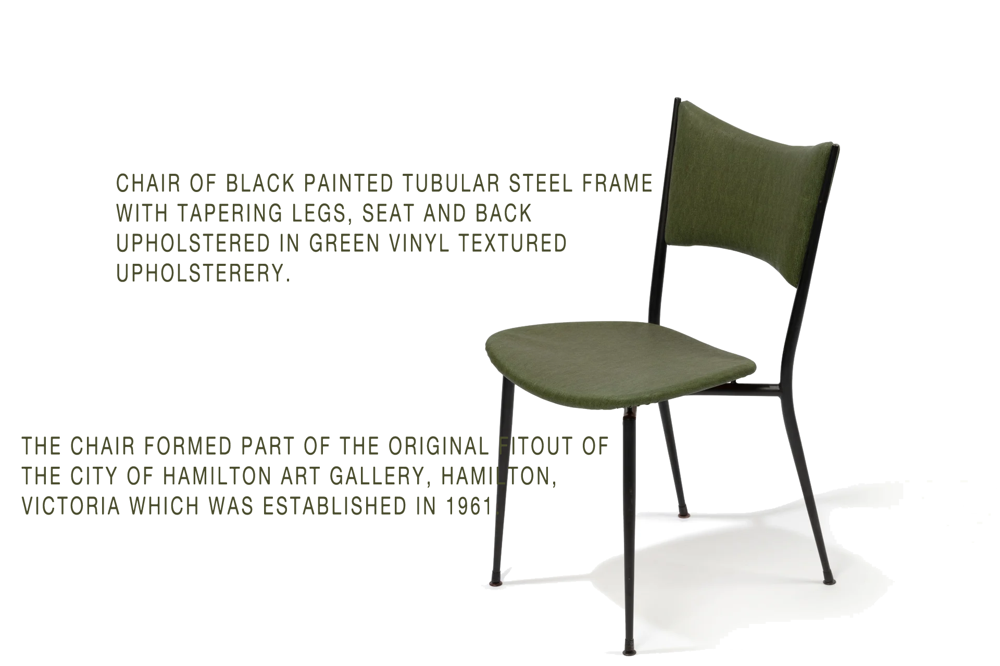

Grant Featherston
Designer
Grant Featherston (1922–1995) was an Australian industrial designer renowned for his iconic furniture designs. His work is characterized by sleek lines, organic forms, and a focus on comfort and functionality. Featherston's most famous design is the Contour Chair, which epitomizes his innovative use of materials and ergonomic principles. Throughout his career, he played a pivotal role in shaping the Australian design landscape, leaving a lasting legacy in the world of modern furniture design.
Grant Featherston became famous for his innovative furniture designs, notably the iconic Contour Chair, which he designed in 1951. His distinctive approach to form, material, and ergonomics garnered international attention and recognition, leading to exhibitions of his work at prestigious venues such as the Milan Triennale.
Featherston's collaborations with his wife, Mary Featherston, further solidified his reputation as a leading figure in Australian design. His legacy continues to be celebrated for its enduring influence on modern furniture design and the shaping of the Australian design landscape.
